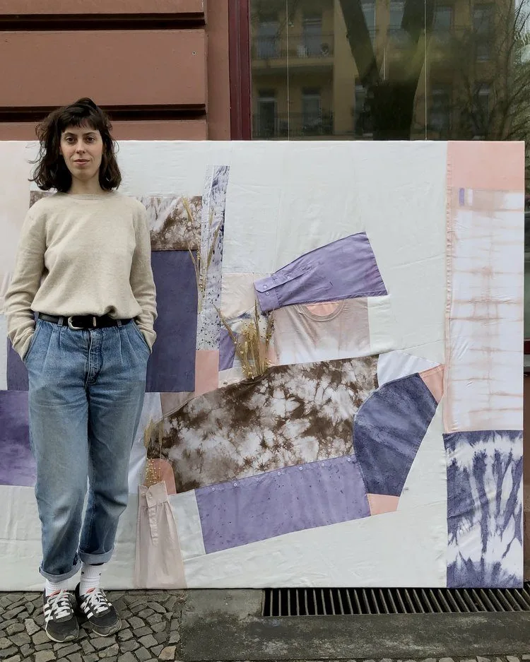

Commissions.
Singular work made for a specific place or purpose. This includes textile pieces for private homes, shop window installations, editorial projects, and work with galleries, museums, and fellow artists. Each commission starts from the context: the space, the brief, the person, and works toward something that belongs there.
- For whom
- Private clients, interior designers, galleries, editorial teams, brands with a specific brief, fellow artists and collectives.
- Deliverables
-
- Textile pieces for private homes and commercial interiors
- Shop window and retail installations
- Art pieces and gallery work
- Color research and sample development for product collections
- Timeline
- Varies by scope. Most projects run 6 weeks or more; larger installations need several months.
- What I need from you
- The context and intended use, a brief or starting point, and a realistic timeline.

Activations.
Live plant-dye sessions brought to your location. I work with groups of varying sizes and adapt the format to what the brief calls for, from technically focused workshops to open facilitated making sessions. Participants always leave with something they made themselves.
- For whom
- Brand experience and marketing teams, companies planning a creative offsite, agencies, in-store programs.
- Deliverables
-
- Live dye sessions at brand launches and in-store events
- Team days and creative offsites
- Private group workshops
- Timeline
- 2–4 weeks lead time. Sessions typically run 1.5–4 hours on the day.
- What I need from you
- A venue with water and electricity that is well ventilated, group size, date, and a sense of what participants should take home.

Collaborations.
Working with brands, designers, and artists to bring plant color into a collection, capsule, garment, or project. This might mean developing a palette from a moodboard, dyeing supplied pieces, or making samples before anything is committed to production. The process always starts with a dye test on your actual material.
- For whom
- Fashion brands, independent designers, artists, concept-driven makers.
- Deliverables
-
- Dye tests and color development on your fabric or materials
- Hand-dyed samples and finished pieces
- Small-batch work for capsules, collections, or individual projects
- Timeline
- 6–10 weeks depending on scope.
- What I need from you
- Your materials in natural fibers, a moodboard or direction, intended use, and timeline. All work is made by hand in small batches only.
Before you reach out.
Can you match an exact Pantone?
No. I develop a palette together with you through sampling on your fabric. Natural dyes are living colors — they do not behave like synthetic dyes, and trying to force an exact match produces worse, not better, results.
What's the minimum order?
I work at sample and small-batch scale. There is no formal minimum; what I don't take on is mass production runs. All work is made by hand.
How far in advance do I need to book?
For collaborations, 6-10 weeks of lead time is typical. For activations, 2-4 weeks. Commissions vary by scope; larger installations need several months. Rush projects are rarely accepted; the chemistry genuinely will not be hurried.
Do you travel for activations?
Yes, internationally. Travel and shipping of equipment are billed separately to the activation fee. The venue needs water and heat access.
What fabrics can you work with?
Natural fibers only — cotton, linen, hemp, silk, wool. Blends are case by case; anything with synthetic content (polyester, nylon, elastane) will not take plant dye.
Can you source the fabric?
Yes. I source European-grown natural fibers and also work with materials brought by clients. Natural fibers only: cotton, linen, hemp, wool, silk.
Do you take residential interior commissions?
Yes. Hand-dyed textile wall pieces, drapery panels, and custom textile works for private homes and commercial interiors.
Do you still run public workshops?
Not currently. Workshops happen as private bookings: brand team days, group sessions, and on-location events. If you want to learn independently, the library and the ebooks are the route.
Tell me about
your project.
hello@kaliko.co →
When you write, please include
- Short description of your project
- Fabric (what it is, where it's coming from, how much)
- Intended use and context
- Timeline and ideal date
- Approximate budget range
- Any references, moodboard, or images I should see